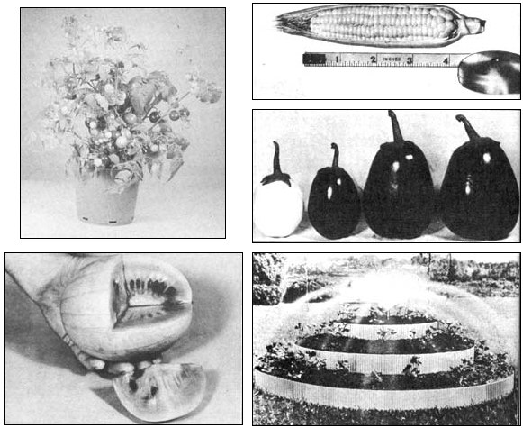
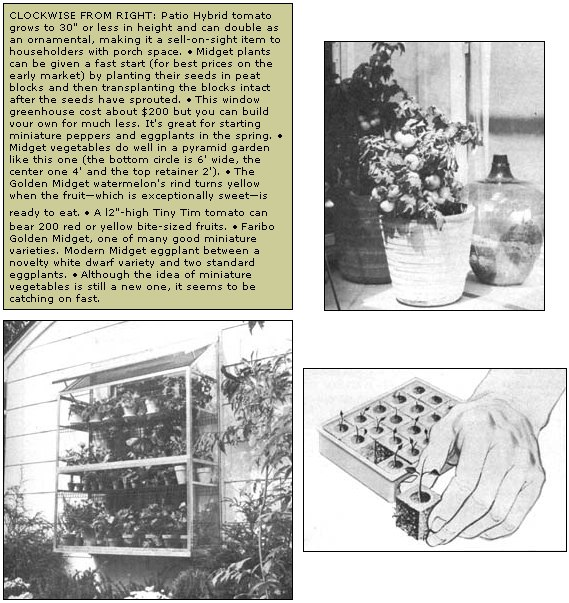

How To Make Money With Midget Vegetables
Growing some of the novel new midget vegetables in your garden next summer can give you a cash crop that will have practically no competitors. A boot strap business
By the Mother Earth News editors
January/February 1973
Excerpted and rewritten from GROWING MIDGET VEGETABLES AT HOME by Grant & Holly Gilmore. Copyright ©1973 by Grant & Holly Gilmore, published by Lancer Books, Inc., at $1.95.
Growing some of the novel new midget vegetables in your garden next summer can give you a cash crop that will have practically no competitors, for miniature produce is almost completely unknown on the market. Growing it, however, takes no more nor different care than standard vegetables need.
The midgets' difference lies entirely in size; usually both the plant and the part you eat are smaller than standard varieties. This miniature-appeal is their strong point in making sales . . . though they have some other advantages too, such as earlier maturity (a big plus if you live in a short-summer climate).
Yes, many of the midgets do develop much faster than standard-sized produce. And remember that these little vegetables are ripe and fully flavored . . . not small because they're under-developed.
Four-inch cantaloupes, for instance, are both ready for the table in only 60 days (when their standard-sized big brothers still have a month or so to go) and are noted for sweetness and down-to-the-rind goodness. Golden Midget watermelon ripens in just 65 days . . . and its earliness certainly makes it seem golden in sales value. Little Midget watermelon weighs only 10 pounds, is extremely sweet and is table-ready in 75 days. Start all these melon plants under Hotkaps in April and have them ready in plenty of time for the Fourth of July trade. (A Hotkap is a commercial plant protector, consisting of a waxed-paper dome about the size of a mixing bowl. A substitute is a little tent of shower-curtain plastic held up by four sticks in the ground and anchored all around with earth.)
We know from experience that three extremely popular vegetables with women who like to do fancy canning are two of the midget carrots and the midget beet. Tiny Sweet carrot has a perfect cone shape and deep color at its three-inch-long full maturity and Red Apple carrot has great appeal because of its solid, blocky little form and fine flavor. Also a treasure for the home canner, Spinel beet reaches its ping-pong ball size in about 50 days and is made-to-order for pickling.
Miniatures whose deliciousness will do their own advertising for you are Dwarf Green Long Pod okra, and the edible-podded Dwarf Gray sugar pea.
This sugar pea is lavishly productive, crisp and garden-delicate. It's a vegetable few people know about . . . but one that almost anyone can appreciate. Dwarf Gray sugar peas are splendid for customers with freezers, although they're available at only a few markets at prices ranging up to $3.00 a pound, and of quality far inferior to those fresh from an organic garden.
Fresh okra is another vegetable difficult to find in good quality at the market. But - given a warm summer - it grows productively in the home garden, and is a good plant to look at. The Dwarf Green Long Pod variety, topping off at about two feet, starts giving you succulent pods in approximately 50 days, and then goes on and on.
The first-of-the-season, vine-ripened tomato always seems the peak of perfection . . . and the new midget - Pixie hybrid - is not only ready 52 days after the plant is set out, but has the luscious flavor of a big tomato. The plant grows only 14"-18" tall, and each one produces a large crop.
Sweet corn in a mere two months? Yes. Golden Midget's two-to-three-foot-tall plants produce their delicious four-inch-long ears that quickly. Let your customers know you can have fresh corn ready at a particular time, and you won't be able to keep up with the orders. One otherwise pretty sedate seed house grows lyrical about this little golden corn: "Acclaimed the sweetest, tenderest, most flavorful corn ever grown!"
Then - in time to round out the season at Halloween - there's the midget pumpkin, Cinderella, which grows 10-inch-wide fruits for jack-o'-lanterns and delicious pies. Cinderella needs only a little garden space, too.
The "carriage-trade" food stores - those that take telephone orders, deliver and carry charge accounts - are always searching for specialties they can offer their customers. Here, the first-of-the-season produce fetches premium prices, as does the unusual . . . midget Tom Thumb lettuce for individual salad servings, little dollar-size St. Pat scallop squashes and the rarely seen Nosegay pepper (perfect for a relish tray).
These markets often have many customers among the higher-income couples who want just enough to serve two. The miniature cantaloupes and watermelons that store easily in a small refrigerator and that provide two servings with no leftovers have great appeal for such buyers . . . as do such gourmet items as the Spinel beet and Sucram carrot, bred in Europe fur the fancy-restaurant trade.
You should let any quality market in your community know you can supply these unusual vegetables, and tell then) the approximate dates you can have the produce ready. Payment arrangements vary, but a fairly common one is cash on delivery . . . and if the price is right, you can't beat that.
In addition to the midget produce itself, there's a potential market for the miniature plants on which such produce is grown . . . especially for the vegetables - such as tomatoes and peppers - that are usually started early and then transplanted outdoors. "Remember those darling little tomato plants you gave me last year? That I grew on my porch in flower pots?" a friend asked us early one spring. "Each time we had people to dinner, everybody would go pick their own tomato appetizers!"
We took the hint, and though we hadn't planned on seeding Tiny Tims (cherry-size tomatoes on 12" plants) that season, we did so . . . and two months later the little plants were in pots, ready for pickup. As usual, we had more than we needed . . . and our friend asked if she could have the excess for friends who had been taken by her little appetizer tomatoes the previous summer.
Obviously there's a market here for anyone who can supply it. A midget tomato plant, already well-started in a flower pot, is going to be as welcome as a spring bouquet . . . and a good deal scarcer.
We have also potted Tiny Dill, a miniature cucumber from New Hampshire (its vines are only two feet long and it starts bearing plump little three-inch-long fruit in 55 days). We put neat curled-parsley plants and French basil in small plastic pots for epicurean cooks to grow right in their aromatic kitchens . . , and have had those cooks tell us of friends who've asked where they could possibly buy such plants for them selves. Every seed house carries curled parsley, but we'll admit French basil is something else again; we used to have to order it from Europe, although it's now carried in this country by Nichols.
Almost all seed houses handle some midgets. Those with especially good listings are: Burgess Seed & Plant Company, Galesburg, Michigan 49053; W. Atlee Burpee Company, Philadelphia, Pennsylvania 19132, Clinton, Iowa 52732, and Riverside, California 92502; Farmer Seed & Nursery Company, Faribault, Minnesota 55021; Nichols Garden Nursery, 1190 North Pacific Highway, Albany, Oregon 97321; George W. Park Seed Company, Greenwood, South Carolina 29646. Catalogs are free for the asking in each case and the vegetables that come in midget sizes include beets, cabbage, cantaloupes, carrots, corn, cucumbers, eggplants, lettuce, okra, peas, peppers, pumpkins, squash, tomatoes, turnips and watermelons.
For anyone already raising a good-sized garden and supplying some markets-or running a roadside stand of his own-the midget vegetables are a natural for attracting attention, cash and talk. In fact, they're so new, your local newspaper or broadcasting station might just be interested in doing a little feature on them. Take the management a few samples, and see what happens. Free publicity is free publicity.
 Mighty Midget pea is so midget it produces peas on plants that stand about 6"" high and bear a lot of plump 3-1/2"" pods in only 60 days. |
 |
 |